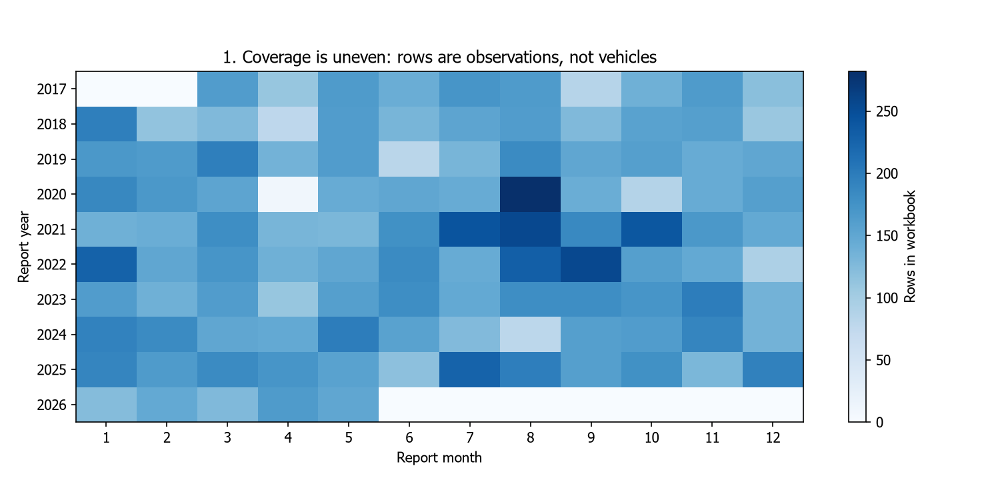
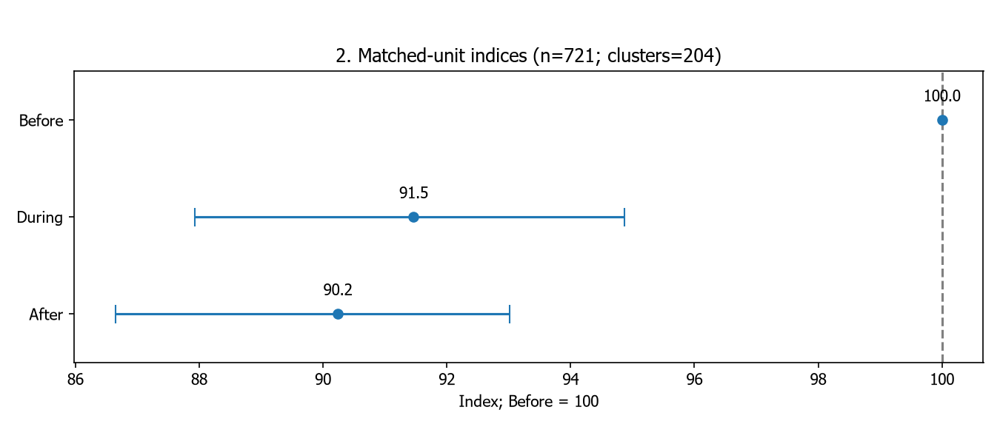
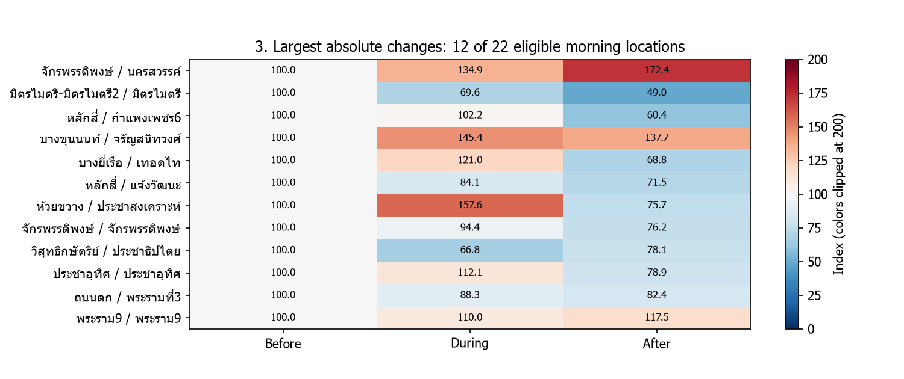
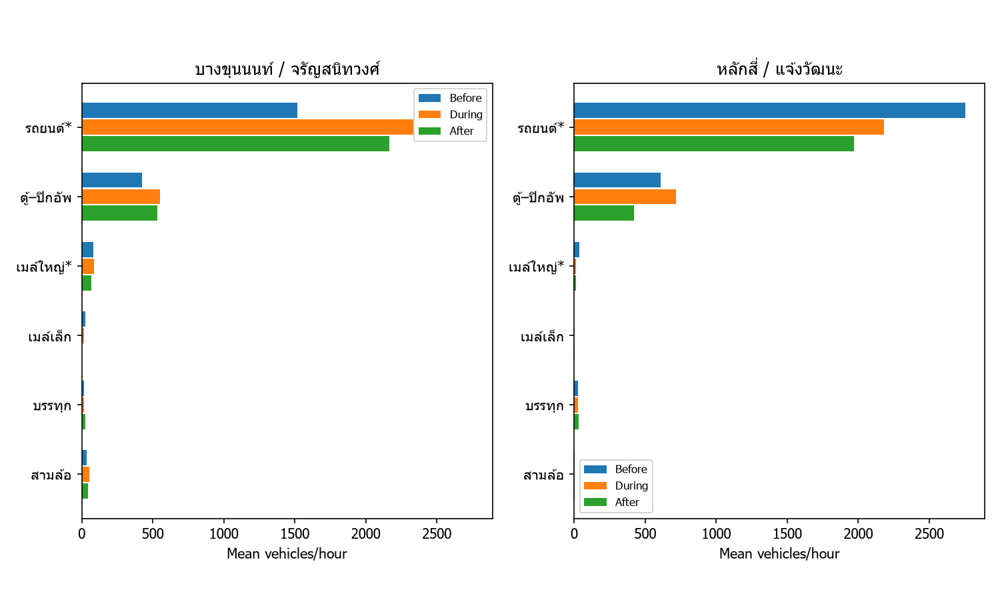
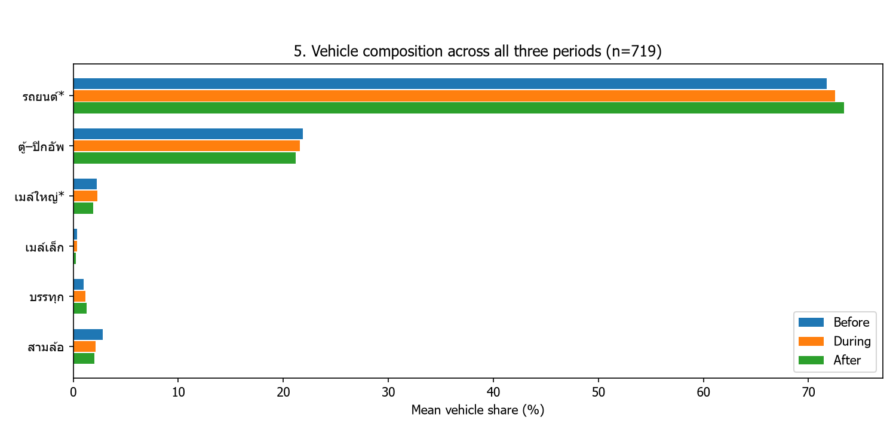
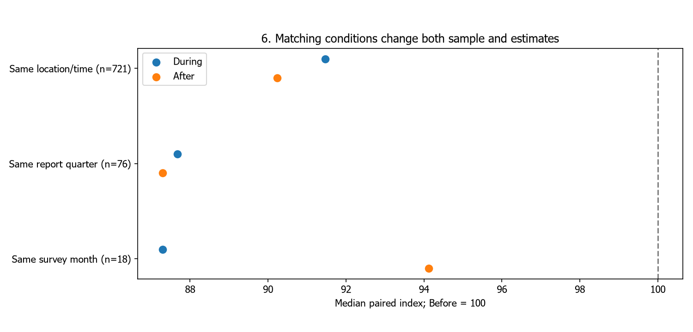
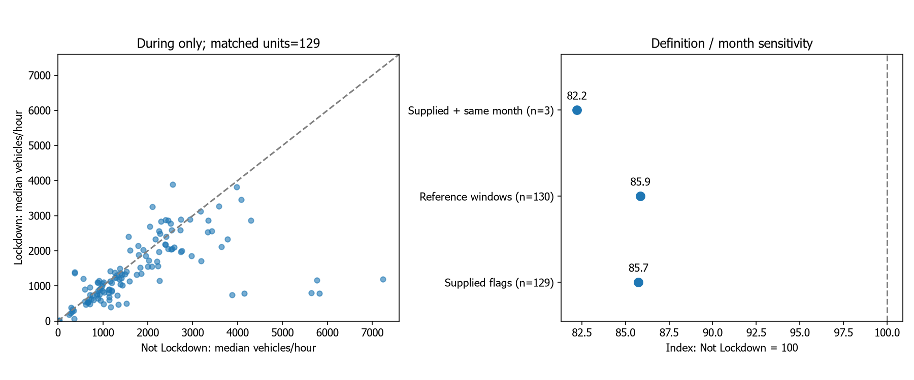

Bangkok Traffic V4Bangkok Traffic V4
ปริมาณรถและความต่างรายสถานที่
During=91.5; After=90.2; Before=100
1. ขอบเขตข้อมูลก่อนตีความ

ไฟล์มี 17,440 แถว; ผ่านเกณฑ์ V4 17,250 แถว; จับคู่หลัก 3,045 แถว / 721 หน่วย
ช่องศูนย์หมายถึงไม่มีรายการในไฟล์ ไม่ใช่ไม่มีรถ; ขอบเขตที่ตรวจไม่รับรองว่าเป็นทุกเดือนที่หน่วยงานมี2. ภาพรวมของชุดที่จับคู่ได้

During=91.5; After=90.2; Before=100
ไม่ใช่ผลเชิงสาเหตุ; bootstrap ไม่รวม selection bias และความผิดต้นทาง ไม่ได้ทดสอบ After–During โดยตรง3. แต่ละสถานที่เปลี่ยนเหมือนกันหรือไม่

มี 22 คู่เช้าที่สำรวจอย่างน้อยสองรายการทุกช่วง แสดง 12 คู่ที่ผล After ต่างจาก 100 มากที่สุด
ตั้งใจเลือกผลต่างสูง จึงไม่ใช้ภาพนี้เป็นตัวแทนการกระจายทั้งเมือง; ปฏิทินไม่จำเป็นต้องตรงกัน4. ประเภทรถในกรณีศึกษาที่ผ่านเกณฑ์ ครบสามช่วง

บางขุนนนท์/จรัญสนิทวงศ์ รถรวมเปลี่ยนมัธยฐาน After เทียบ Before +37.7%; หลักสี่/แจ้งวัฒนะ รถรวมเปลี่ยนมัธยฐาน After เทียบ Before -28.5%
กราฟใช้ค่าเฉลี่ย ส่วนเปอร์เซ็นต์ในข้อความใช้มัธยฐาน; รถยนต์รวมแท็กซี่ ไม่ใช่หลักฐานสาเหตุ5. องค์ประกอบรถ Before–During–After

หมวดรถยนต์ Before=71.72%, During=72.51%, After=73.39% จาก 719 หน่วย
สัดส่วนเพิ่มไม่เท่ากับจำนวนเพิ่ม; หกหมวดไม่ใช่ทุกยานพาหนะและไม่ใช่ผู้โดยสาร6. ข้อสรุปไวต่อเงื่อนไขหรือไม่

Same location/time: n=721, During=91.5, After=90.2; Same report quarter: n=76, During=87.7, After=87.3; Same survey month: n=18, During=87.3, After=94.1
สมาชิกเปลี่ยนเมื่อเพิ่มเงื่อนไข จึงไม่ใช่การทดลองเปลี่ยนเงื่อนไขบนกลุ่มเดิมทั้งหมด7. Lockdown เทียบ Not Lockdown ภายใน During

ตาม flag ผู้ใช้ จับคู่ 129 หน่วย 278 แถว ดัชนี=85.7; Flag ในไฟล์ต่างจากกรอบวันที่อ้างอิง 168 แถว; invalid binary/complement 0 แถว
flag ยังมีแถวต่างจากกรอบวันที่; reference windows เป็นการทดสอบนิยาม ไม่ใช่การแก้ต้นฉบับหรือรับรองทุกช่วงมาตรการ จำนวนคู่ลดมากเมื่อคุมเดือนข้อเสนอแนะและข้อจำกัด
สำรวจซ้ำสถานที่ เวลา เดือน และประเภทวันให้เทียบเคียงกัน
ทวนข้อมูลต้นทางและค่าว่าง; เพิ่มความเร็วหรือเวลาเดินทางหากจะตอบเรื่องรถติด
ยังไม่สรุปผลเชิงสาเหตุจาก COVID